Respek
Teenoor onsself, mekaar en ons gemeenskap.
NWU-KOSHUIS · POTCHEFSTROOM
TRADISIE.
BROEDERSKAP.
UITNEMENDHEID.
Meer as net 'n koshuis. 'n Tuiste waar karakter gebou word en vriendskappe blywend word.
Een Huis.
Een Familie.
Over de Voor.
ONS STORIE
Over de Voor is sedert 1962 deel van die studentelewe in Potchefstroom. Die koshuis staan bekend vir sy ryk tradisies, sterk broederskap en strewe na uitnemendheid.
Ons fokus op 'n gebalanseerde studente-ervaring: akademie, sport, kultuur, karaktervorming en vriendskap.
Leer ons ken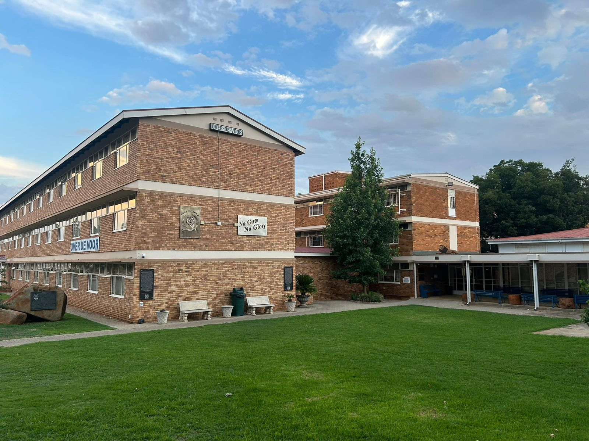
ONS WAARDES
Teenoor onsself, mekaar en ons gemeenskap.
In akademie, sport en elke uitdaging.
Beginsels wat ons optrede rig.
Saam groei, saam leer, saam staan.
Ons strewe daarna om ons beste te gee.
KOSHUISLEWE
Van akademie en sport tot kultuur en tradisie — hier kry jy ruimte om te ontwikkel en deel te wees van 'n hegte gemeenskap.
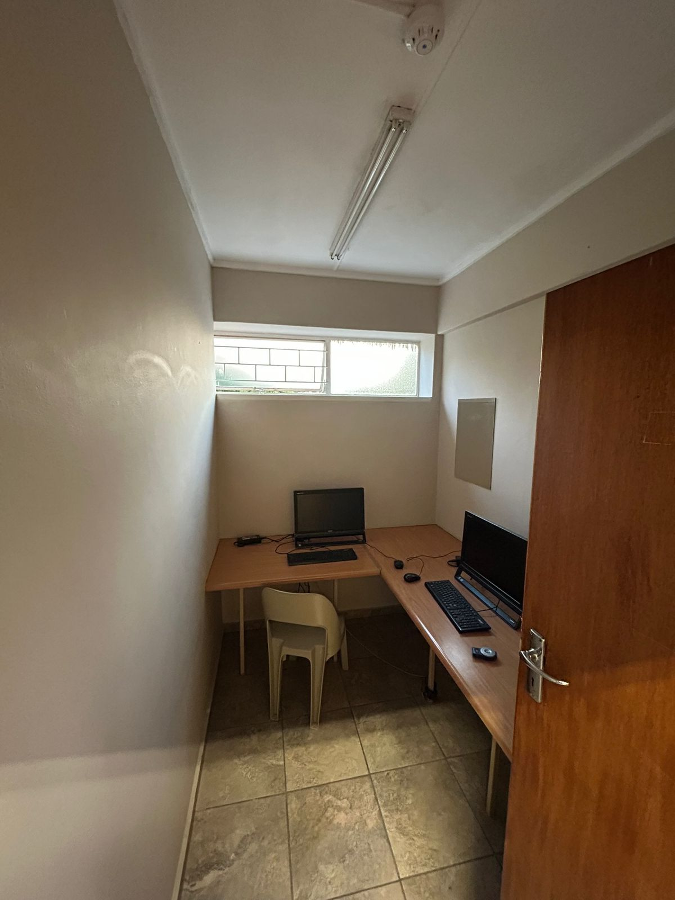
Ondersteuning, studie en persoonlike groei.
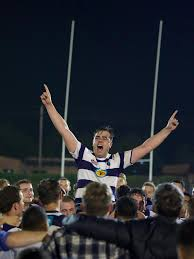
Spanwerk, kompetisie en karakterbou.
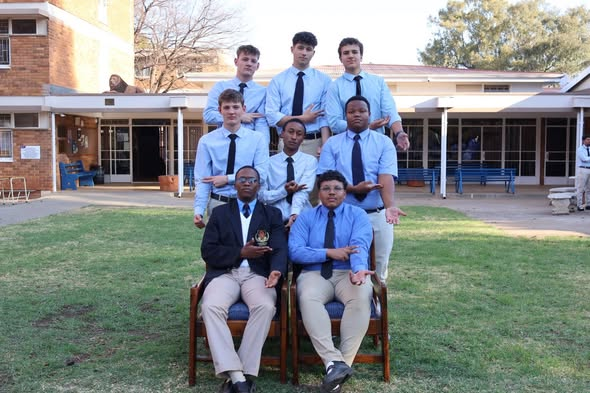
Gemeenskap, formele geleenthede en kreatiwiteit.
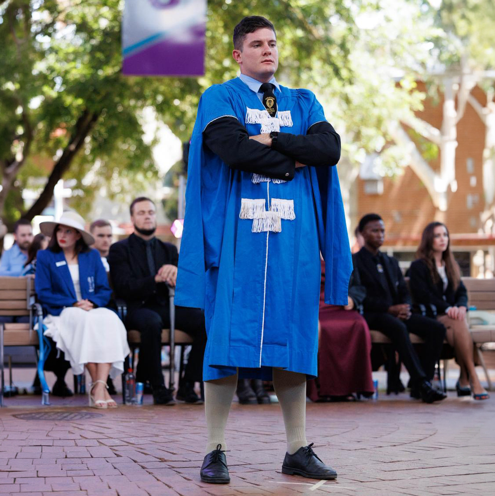
Ons unieke gebruike en blywende herinneringe.
TRADISIES EN IDENTITEIT
Over de Voor se visie is om kenmerkende karakter te ontwikkel en deur uitnemendheid in elke situasie aanpasbaar te wees.
Ons missie, gegrond in Bybelse waardes, bevorder broederskap, trots en respek om inwoners te bemagtig en die koshuis op kampus te lei.
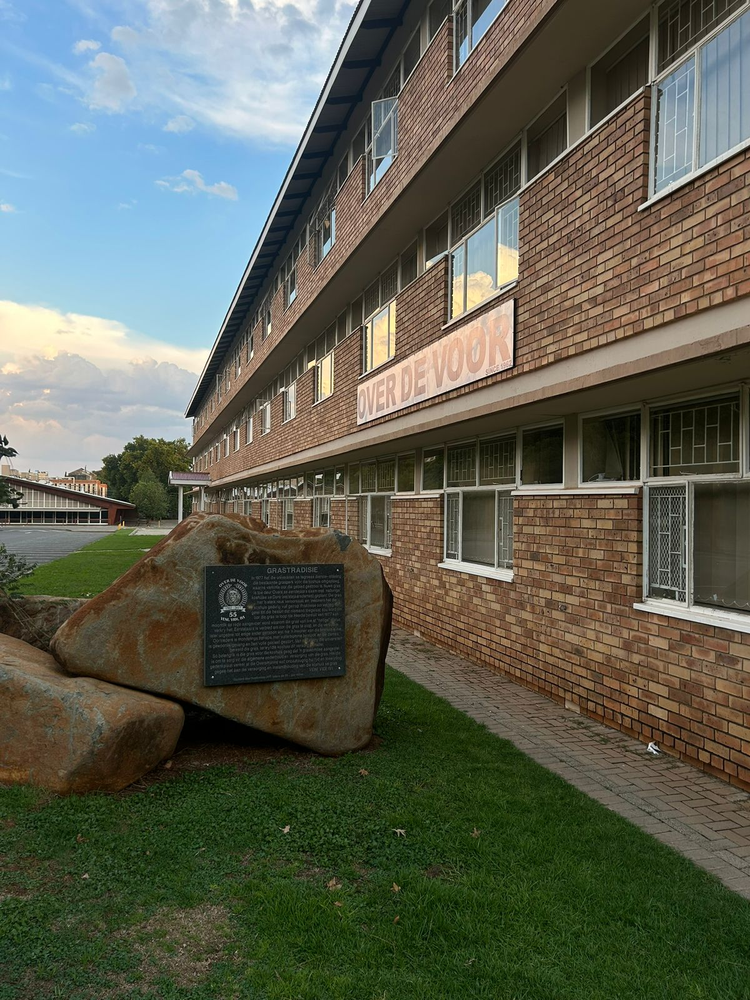
VENI · VIDI · IVIPRESTASIES
Akademie, sport en kultuur is deel van 'n gebalanseerde koshuislewe. Hier is 'n paar van die prestasies op ons bestaande webwerf.
Alle rugbyspanne in halfeindstryde; derde span-wenners.
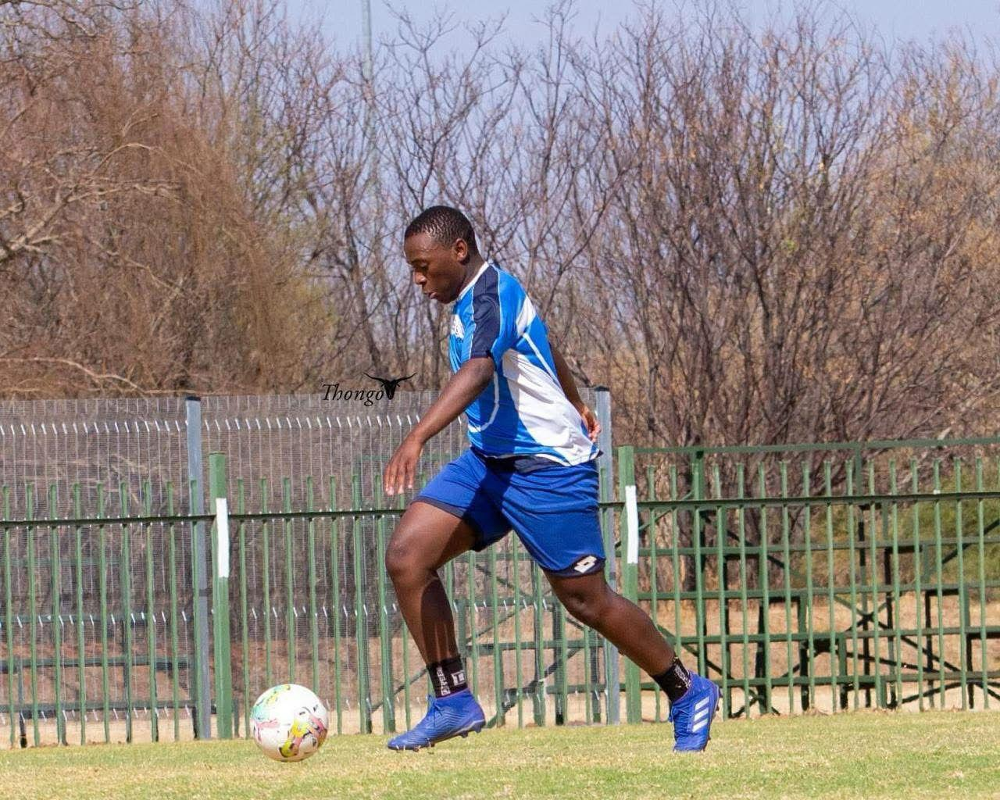
Wenners in 2024.
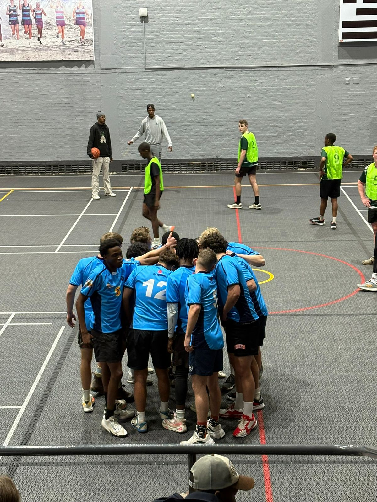
Silwermedaljewenners in 2025.
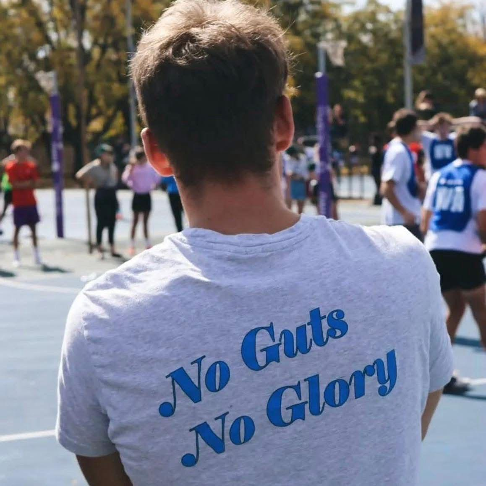
Wenners in 2024.
GALERY
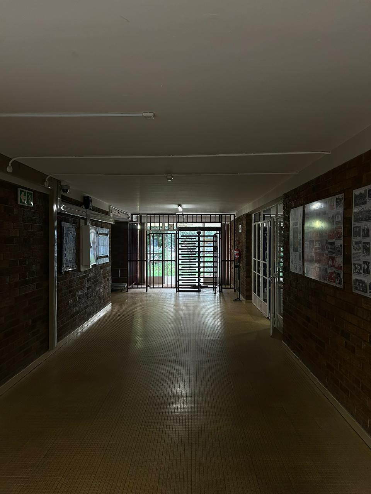
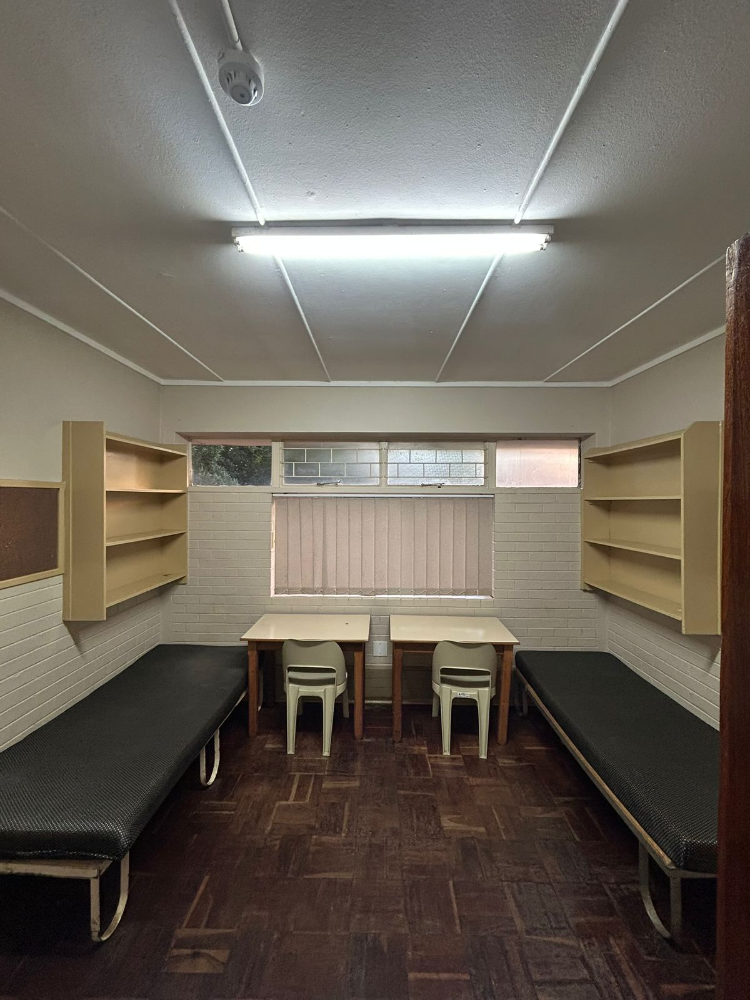
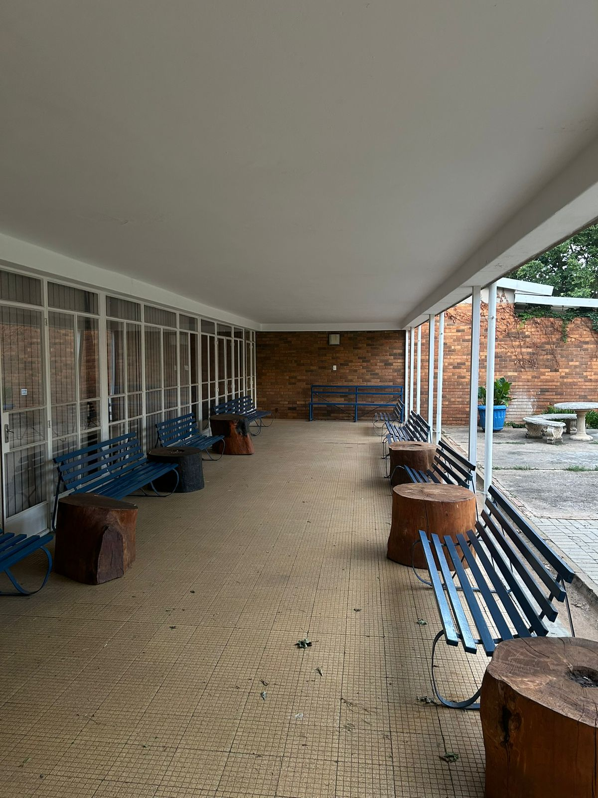

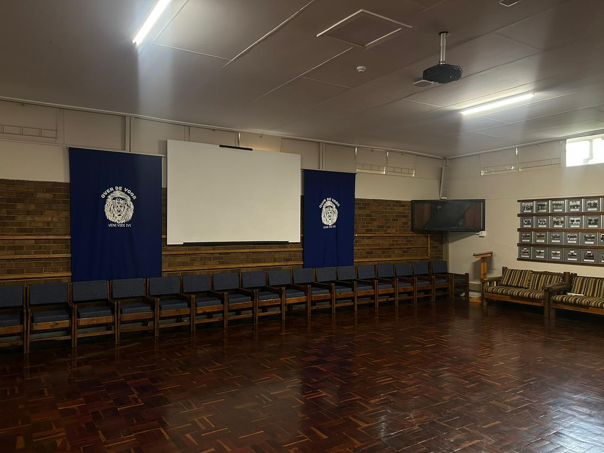
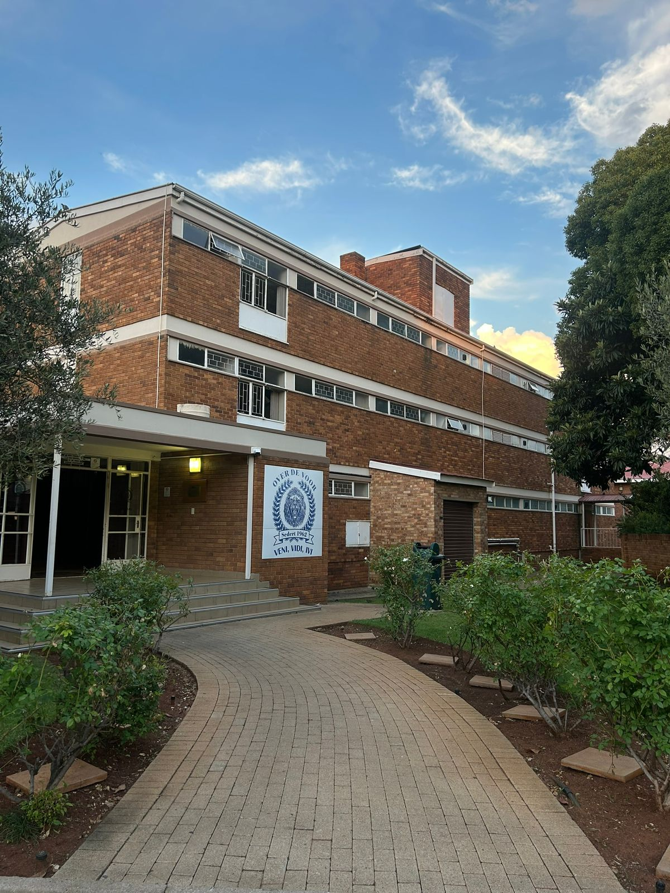

Werklike foto's uit Over de Voor se bestaande webwerf en mediaversameling.
WAT ONS UNIEK MAAK
Ons bou aan vriendskappe, karakter en 'n sterk gemeenskap.
BROEDERSKAPElke uitdaging is 'n geleentheid om saam te groei.
HARDWERKENDHEIDTradisie en uitnemendheid vorm deel van ons identiteit.
ONS ERFENISSLUIT AAN BY
Wil jy meer oor die koshuis weet? Kontak ons werwingsverteenwoordiger of besoek die NWU se amptelike koshuisinligting.
KONTAK ONS
Kontak ons direk vir koshuis- en werwingsnavrae.

11 Hoffmanstraat, Potchefstroom
naby NWU se Wes-kampus
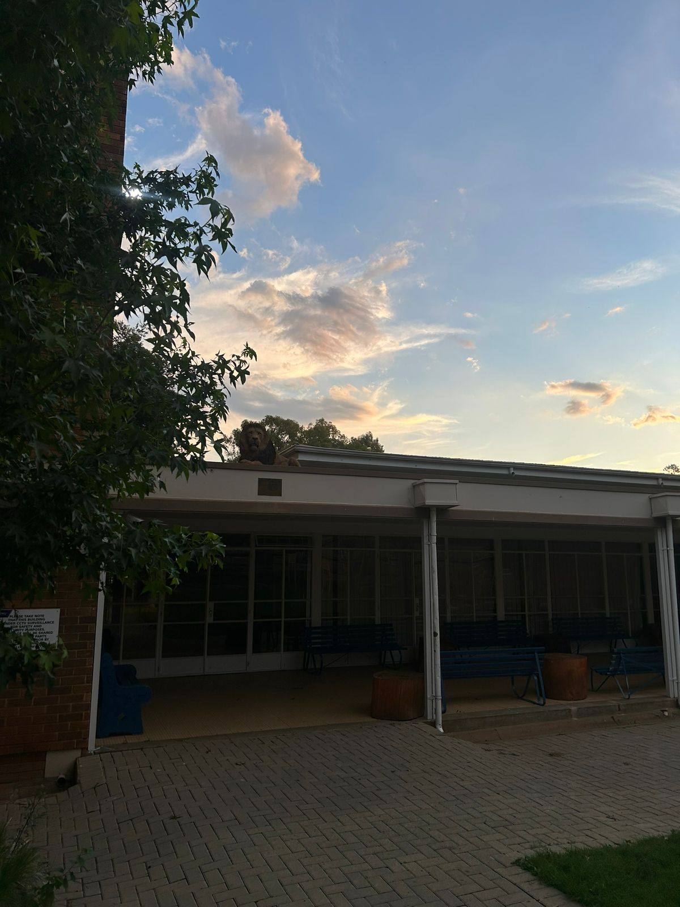
VOLG ONS OP INSTAGRAM
Foto's uit ons koshuisgalery. Vir die nuutste plasings, besoek ons amptelike Instagram-profiel.
Hierdie vier foto's is 'n voorskou uit die webwerf se galery, nie bevestigde jongste Instagram-plasings nie. 'n Gekoppelde Instagram-feed sal die jongste vier outomaties vertoon.
MET DANK AAN ONS ONDERSTEUNERS
Dankie aan die ondernemings wat hierdie blad ondersteun.